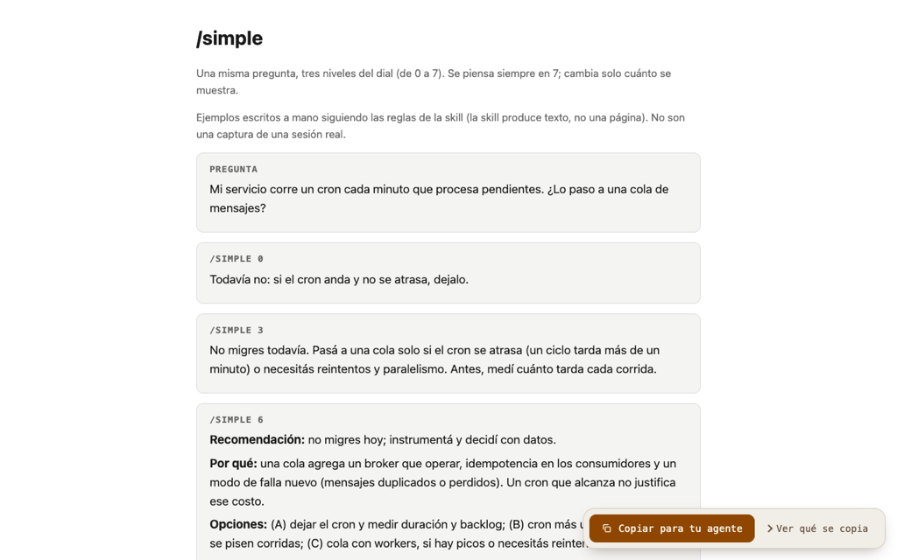
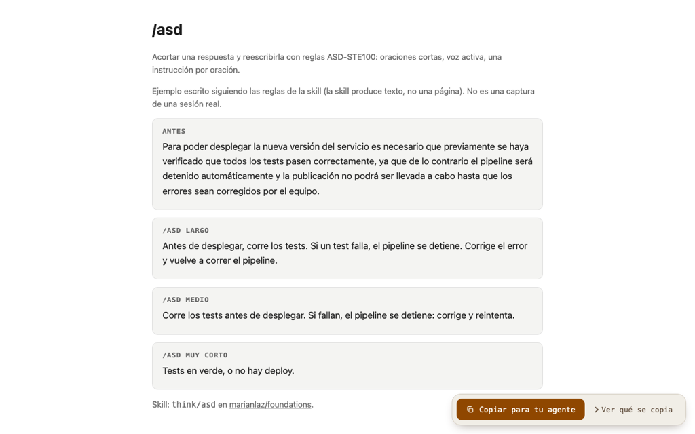
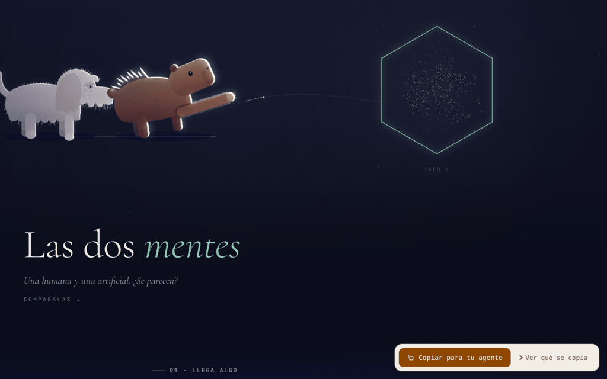
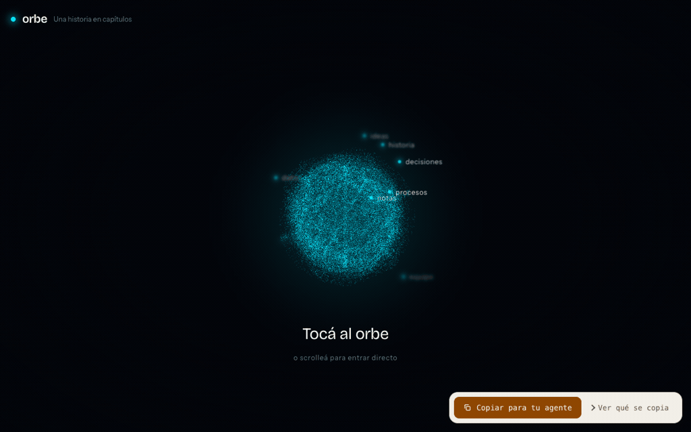
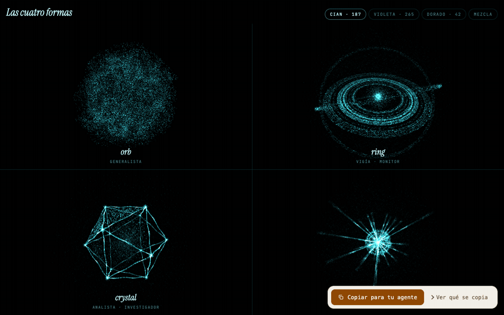

/simple
Una pregunta, tres niveles del dial. Pensás en 7, mostrás lo que pidieron.
Las skills, andando. Cada demo vive en el repo.

Una pregunta, tres niveles del dial. Pensás en 7, mostrás lo que pidieron.

Un párrafo hinchado, reescrito en tres largos con reglas ASD-STE100.

Una historia contada con escenas dibujadas en canvas, frame a frame.

Una web de capítulos de pantalla completa sobre un orbe de partículas 3D.

Las cuatro formas de orbe del motor, en vivo y en 3D.